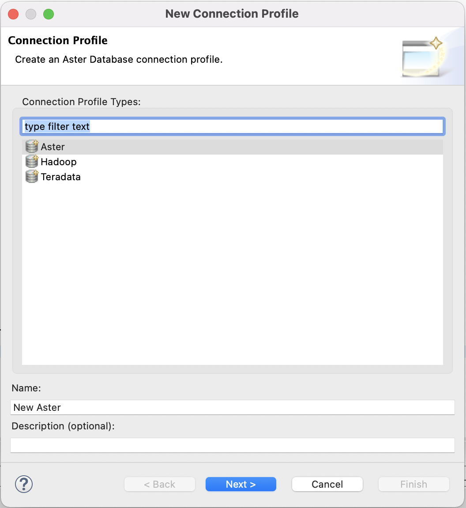

Run Vantage Express on VirtualBox
Author: Adam Tworkiewicz
Last updated: September 7th, 2021
Overview
This quick start shows the quickest way to gain access to a Teradata database by running it on your local machine. There are many ways to install Teradata. This document optimizes for the lowest time to first query without spending money on cloud resources. Once you finish the steps you will have a working Teradata Vantage Express database on your computer.
Prerequisites
-
A computer using one of the following operating systems: Windows 10, Linux or MacOS.
-
30GB of disk space and enough CPU and RAM to be able to dedicate at least one core and 6GB RAM to the virtual machine.
-
Admin rights to be able to install and run the software.
Installation
Download required software
-
The latest version of Vantage Express VM image.
If you have not used the Teradata downloads website before, you will need to register first. -
VirtualBox, version 6.1.
You can also install VirtualBox using brewand other package managers. -
On Windows, you will also need 7zip to unzip Vantage Express.
Run installers
-
Install VirtualBox by running the installer and accepting the default values. VirtualBox includes functionality that requires elevated privileges. When you start VirtualBox for the first time, you will be asked to confirm these elevated access. You will also need to reboot your machine to activate a VirtualBox kernel plugin.
-
If on Windows, install
7zip.
Run Vantage Express
-
Go to the directory where you downloaded Teradata Vantage Express and unzip the downloaded file.
-
Set env variable
VM_IMAGE_DIRto the path of the unzipped image directory. For example: -
We will now create a VirtualBox VM that uses the downloaded image. Run the following command. The script will take several minutes to complete. During the execution, the script will ask for a password to login to the VM and perform some setup. The password is
root. -
Once the VM is up, you will see its desktop environment. When prompted for username/password enter
rootfor both.
-
The database is configured to autostart with the VM. To confirm that the database has started go to the virtual desktop and start
Gnome Terminal. In the terminal executepdestatecommand that will inform you if Vantage has already started:To paste into Gnome Terminal press SHIFT+CTRL+V. watch pdestate -aYou want to wait till you see the following message:
PDE state is RUN/STARTED. DBS state is 5: Logons are enabled - The system is quiescent
See examples of messages that
pdestatereturns when the database is still initializing.PDE state is DOWN/HARDSTOP. PDE state is START/NETCONFIG. PDE state is START/GDOSYNC. PDE state is START/TVSASTART. PDE state is START/READY. PDE state is RUN/STARTED. DBS state is 1/1: DBS Startup - Initializing DBS Vprocs PDE state is RUN/STARTED. DBS state is 1/5: DBS Startup - Voting for Transaction Recovery PDE state is RUN/STARTED. DBS state is 1/4: DBS Startup - Starting PE Partitions PDE state is RUN/STARTED.
Now that the database is up, go back to the virtual desktop and launch
Teradata Studio Express. When you first start it you will be offered a tour. Once you close the tour, you will see a wizard window to add a new connection. SelectTeradata:On the next screen, connect to the database on your localhost using
dbcfor the username and password:
Run sample queries
-
Once in Teradata Studio Express, go to
Query Developmentperspective (go to the top menu and selectWindow→Query Development). -
Connect using the previously created connection profile by double-clicking on
Database Connections→New Teradata. -
Using
dbcuser, we will create a new database calledHR. Copy/paste this query and run it by hitting the run query button ( ) or pressing F5 key:
) or pressing F5 key:CREATE DATABASE HR AS PERMANENT = 60e6, -- 60MB SPOOL = 120e6; -- 120MB -
Let’s create a sample table and insert some data and query it. We will first create a table to hold employee information:
CREATE SET TABLE HR.Employees ( GlobalID INTEGER, FirstName VARCHAR(30), LastName VARCHAR(30), DateOfBirth DATE FORMAT 'YYYY-MM-DD', JoinedDate DATE FORMAT 'YYYY-MM-DD', DepartmentCode BYTEINT ) UNIQUE PRIMARY INDEX ( GlobalID ); -
Now, let’s insert a record:
INSERT INTO HR.Employees ( GlobalID, FirstName, LastName, DateOfBirth, JoinedDate, DepartmentCode ) VALUES ( 101, 'Adam', 'Tworkowski', '1980-01-05', '2004-08-01', 01 ); -
Finally, let’s see if we can retrieve the data:
SELECT * FROM HR.Employees;You should get the following results:
GlobalID FirstName LastName DateOfBirth JoinedDate DepartmentCode -------- --------- ---------- ----------- ---------- -------------- 101 Adam Tworkowski 1980-01-05 2004-08-01 1
Summary
In this guide we have covered how to quickly create a working Teradata environment. We used Teradata Vantage Express in a VM running on VMware. In the same VM, we ran Teradata Studio Express to issue queries. We installed all software locally and didn’t have to pay for cloud resources.